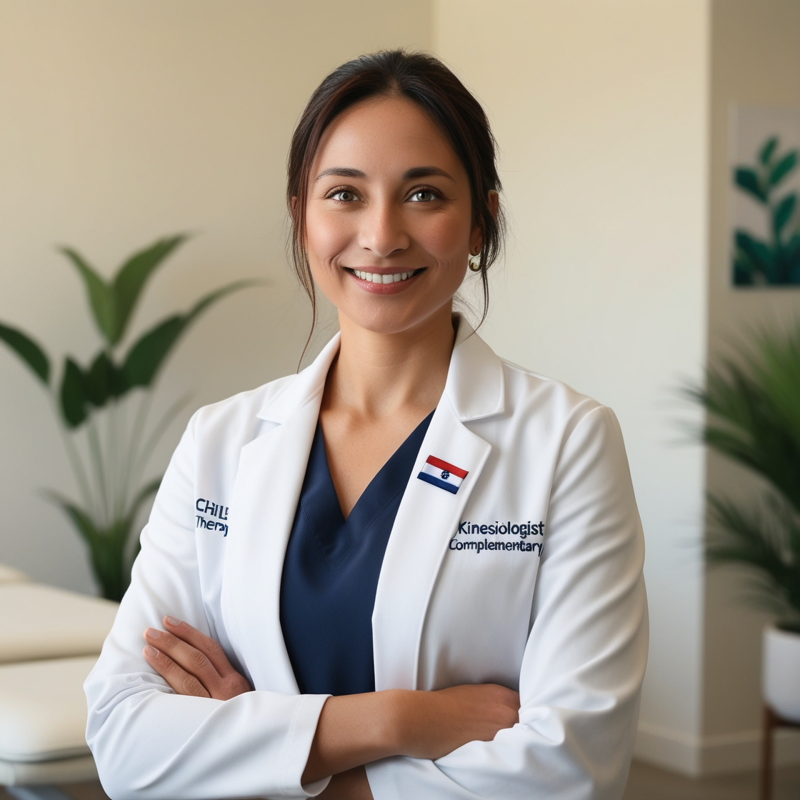

Conoce a nuestros profesionales fundadores del centro
Javiera Muñoz:
Kinesióloga egresada de Universidad Mayor 2018.
Experiencia en pacientes críticos y cuidados paliativos. Diplomatura en terapias complementarias

Isidora Soto:
Enfermera egresada Universidad Diego Portales 2019. Experiencia en pacientes en cuidados fin de vida. Diplomatura en terapias complementarias
Sergio Marín:
Terapeuta Ocupacional egresado Universidad de Chile 2020. Experiencia en pacientes pediátricos. Diplomatura en terapias complementarias